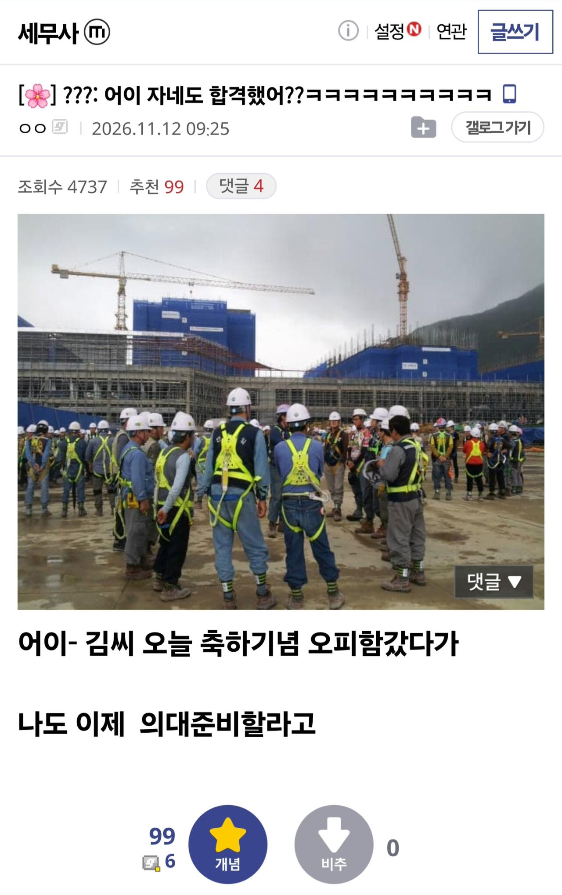

실성한 세무사갤
댓글
문제 궁금하다 얼마나 처어렵길래
걍 틀리라고 배운것 같이 보이는 안배운것들을 냄
근데 윤리적인 부분 빼고, 이제 AI 보조 도구를 '누구나' 사용 가능하다면
내용을 단순히 암기하는 시험은 의미가 더 없지 않나?? 시대가 점차 변하고 있는데
기존에도 내용 암기 확인하는 건 아니었음
그보다는 암기한 내용 중에서 여기에다가 어떤 내용을 어떻게 적용해서 어떻게 해석할 것인가? 이런 거지
암기 뿐만 아니라 응용력도 시험하는 건데, 그걸 전부 AI한테 맡겨버리면
나중에 AI찐빠로 문제 터져도 이게 어디서, 왜, 어떻게 터졌는지는 물론이고 아예 터졌다는 인식조차 못하는 새끼들이 튀어나올 테니 아직은 멀었음
뇌에 보조칩 심으면 이제 끝이지 뭐
기술지식은 곧 의미없어짐
그거 되면 우리 죽을때임 ㅋㅋㅋㅋ
그거 10년도 안남음
상용3년 보급5년 기초적인 임플란트화 보수적으로 7~10년본다
너 10년전에 지금기술 수준 말했으면 죽기전을 넘어 100년뒤에나 될법하다 했을걸?
20년전에 좆만한 폰으로 사진도찍고 고사양게임도하고 업무도하고 실시간 번역에 티비도 보고 다 할거라는 글에 써진 댓글이 작성자 병신취급하는 조리돌림이였음 ㅋㅋ
심지어 기술발전 그래프는 1차함수가 아니고 지수함수임
내가볼땐 이번 수석했다는사람 타의적 다크나이트됐음ㅋ그동안 시험장에 쓰다 걸린사람들 얘기만 듣다가
감시 뚫고 합격했는데 수석까지 해버리는 바람에 ai장비의 폐해가 크리티컬로 터짐ㅋㅋ공론화 제대로 시켰네
좋겟다
올해가 막판이엇던거같은데 제일좋은기회 날리네
님도 빨리 치셈 자격증나옴